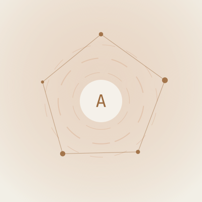
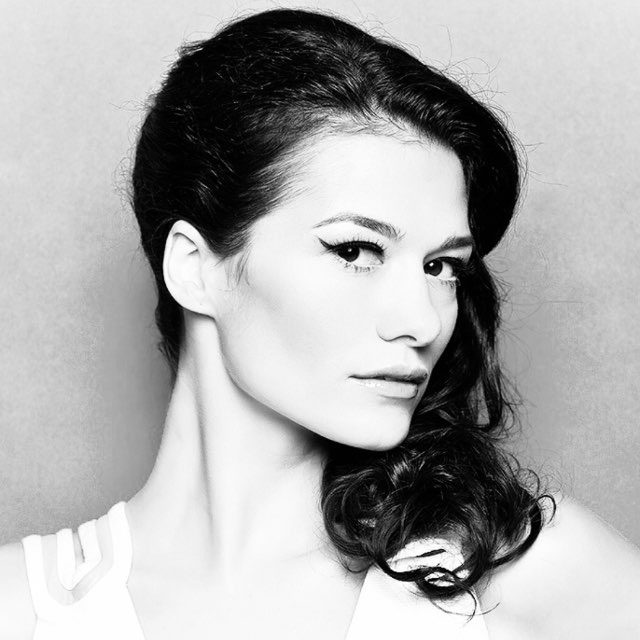
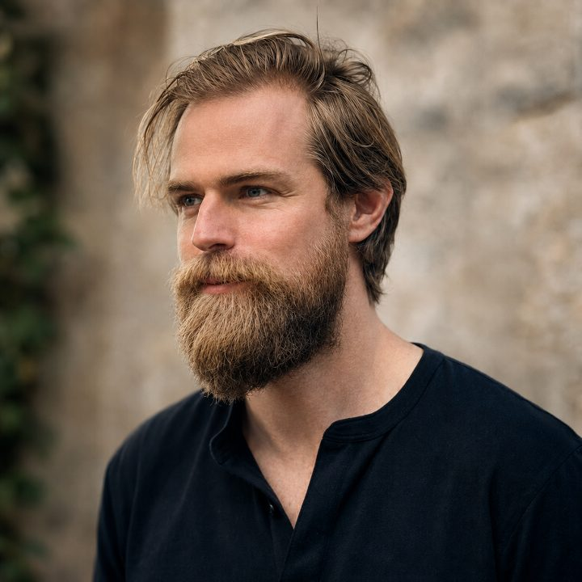
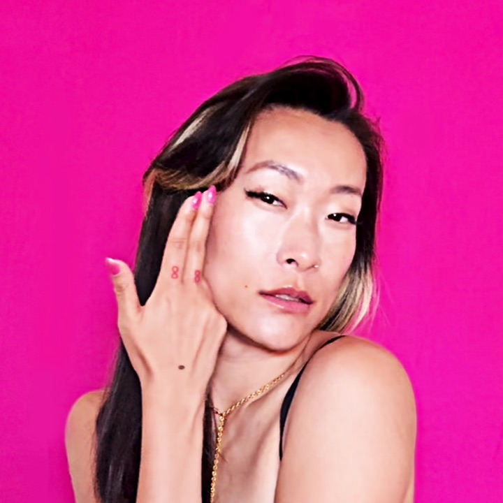
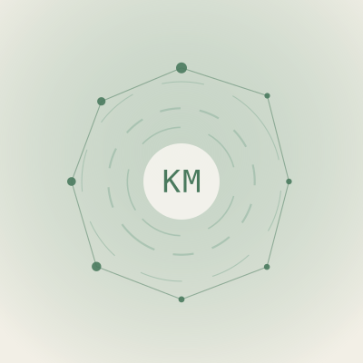

16 days
The Cohort & Core Inquiries
This team will take part in the residency. Click on the names to learn more about them.

Michel Bauwens
Intellectual AnchorDeep Dives and Seminars

Alex
Accelerated learning framework

Anastasia Angelova
Social Innovation Game & Community Hub

Andrej Berlin
Sanctuary Residency Chiang Mai

Anna Zhu
Social media grind

Justina Švitraitė
Web3 Case Study Review

Kyle MacLean Smith
Agent-based Founder Support System